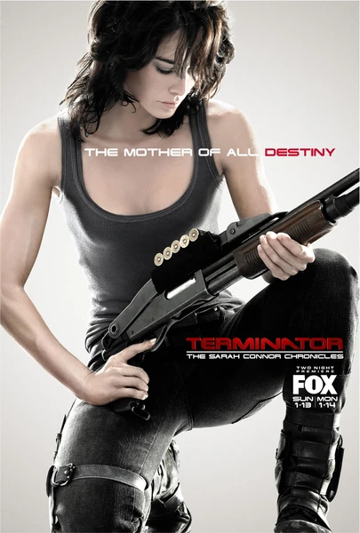

Терминатор: Битва за будущее
Terminator: The Sarah Connor Chronicles
2008
Боевик, Фантастика
Судный день не отменён, а отложен: Кэмерон, модель T-1001, выброшенная из будущего, которого больше нет, появилась на пятнадцать лет раньше — и у Сары Коннор, скрывающейся с сыном в 2007 году, появился шанс, которого у её поколения не было. Это история о сопротивлении, в чьих рядах оказался пришелец из будущего — над которым у них нет власти и чью собственную историю они не могут себе присвоить, — а также о том, что происходит с человеком, когда он узнаёт своё будущее, которое уже невозможно отменить.
Описание на английском
Judgment Day is not avoided in this version of Terminator, only deferred: Cameron, a T-1001 thrown out of a future that no longer exists, arrived fifteen years early, and Sarah Connor, hiding with her son in 2007, has the chance her generation never had. Two seasons about a resistance line that has a visitor from the future but neither control over it nor any claim on its own history, and about what knowing your own future does to a person when it can no longer be called off.